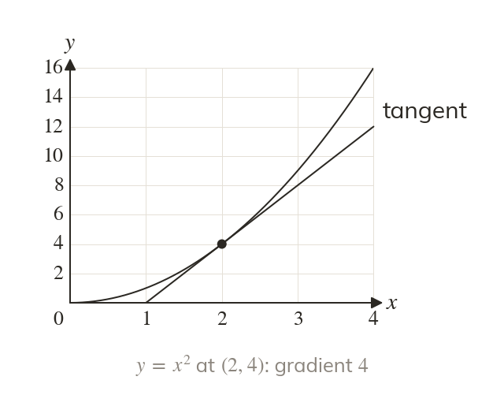

The tangent borrows the curve's gradient
The tangent's gradient is dy/dx at the point. The tangent also passes through the point.
The tangent at a point has the same gradient as the curve there, found from dy/dx. It also passes through the point itself.